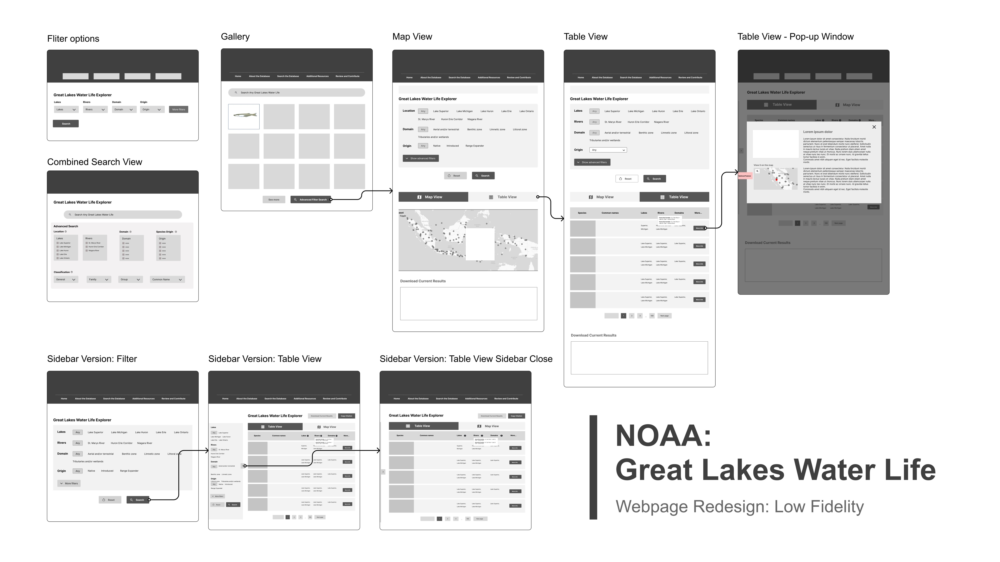
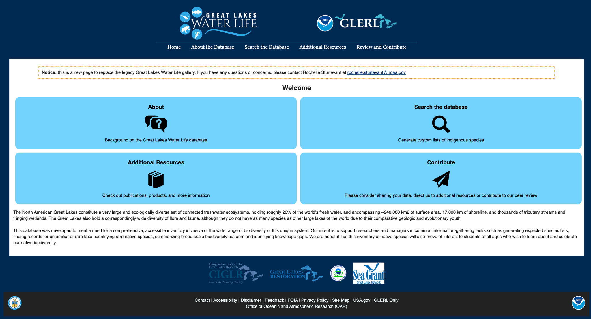
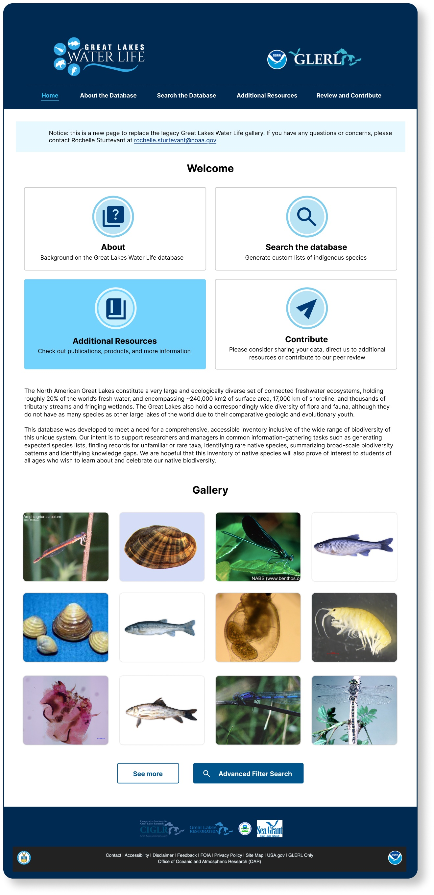
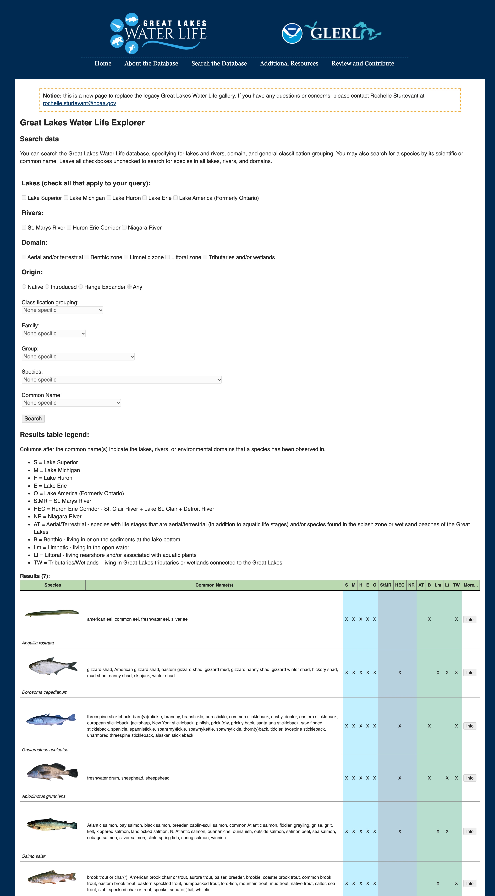
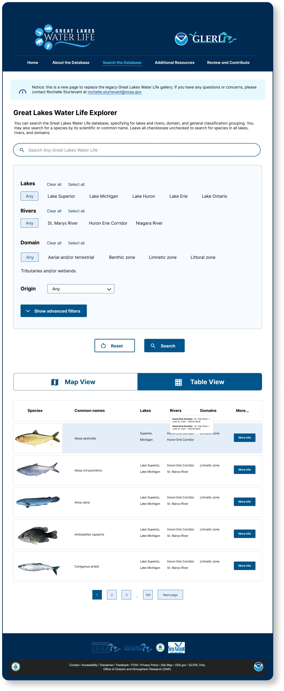
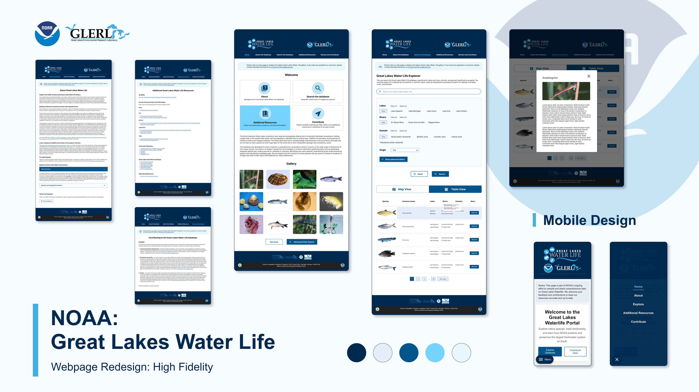
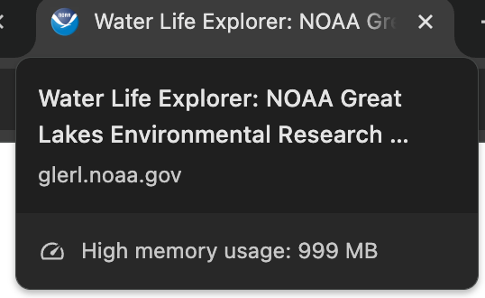
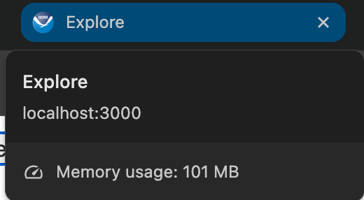
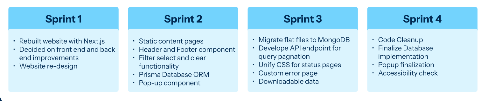
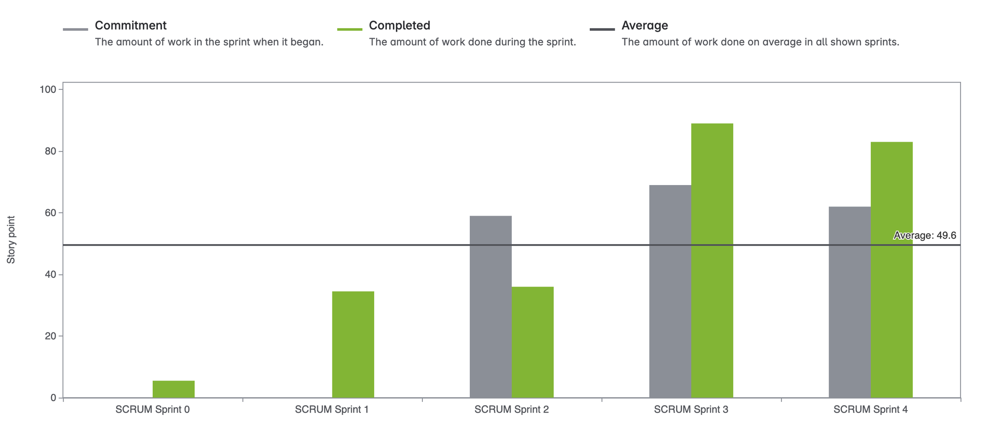

Overview
NOAA’s Great Lakes Water Life lets anyone explore every species in the Great Lakes. We rebuilt it as a dynamic Next.js application on a custom MongoDB database, so users can browse, search and filter species data easily.
The client identified that the site’s design and functionality were outdated. Together we set goals for both the interface and the back end: a database to store wildlife information, and an application that mirrors what the current site can do while being more modern and intuitive.
Redesigned every page
Low- and high-fidelity designs for the homepage, Explore, About, Additional Resources, Review & Contribute, and the mobile layout.
Built the Explore page front end
Wrote the front-end code for the Explore page — search, filters and results — in the team’s Next.js application.
Who it is for, and what “done” meant
Two very different audiences use the same database.
- Need
- Easy, intuitive filters and the ability to download filtered data about species.
- Need
- Information that is easy to understand, and species that are easy to browse.
A database for performance
Flat files become a relational store.
Queries from the React front end
Functional end to end.
Better usability through redesign
Modern, intuitive, responsive.
Areas of improvement
What was wrong with the old site, aspect by aspect, and what the new one does instead.
Repetitive headings (e.g. “About” shown multiple times)
Streamlined — each menu item has a distinct purpose
Duplicate sections and redundant links
Focused layout with clear calls to action
Confusing, hard to tell where to go next
Straightforward guidance to Explore and Contribute
Dense, blocky layout with heavy text
Open, visual-first layout with gallery and CTAs
Overlapping information creating visual clutter
Clean hierarchy and reduced cognitive load
Static and text-heavy
Dynamic gallery inviting immediate interaction
Mixed navigation logic between homepage and other pages
Unified structure across homepage and navigation bar
Loaded all data and processed it in the browser
Database queries for paginated data
From low fidelity to high fidelity
I designed every page, first in greyscale to settle the structure, then in high fidelity for desktop and mobile.

Filter options and a combined search view
Two ways to start: a compact filter row, or search and advanced filters together.
Gallery, map view, table view and a species pop-up
Different ways to read the same result set.
A sidebar version
Filters in a collapsible sidebar next to the table, explored and compared with filters on top.


Four blue blocks repeat what the navigation already says
Four cards with icons and one-line descriptions make each destination clear
A dense paragraph and duplicate links; nothing to look at
A species photo gallery invites browsing, with “See more” and “Advanced filter search” as calls to action
Repetitive headings and mixed logic between pages
One navigation bar, the current page highlighted, the same on every page


No search field; the user must fill a long form
A search bar comes first, for a species’ scientific or common name
Rows of small checkboxes and five dropdowns shown all at once
Filters grouped by Lakes, Rivers and Domain with “Clear all / Select all”; advanced filters stay folded until needed
Columns of coded letters (S, M, H, E…) that need a legend to read
Lake and river names written out in the table; “More info” opens a species pop-up
One long table only
Map view and Table view tabs, with pagination
All pages in their final design — About, Additional Resources, Review & Contribute, Homepage, Explore with the species pop-up — plus the mobile layout and the colour palette.

Tech stack
Chosen for speed of development, performance, and the client’s planned move to the cloud.
Server-side rendering for faster loads and better SEO; API routes in the same code base.
A document-oriented NoSQL database with data structured in web-friendly formats.
Containerised for easy deployment across platforms, ready for the cloud migration.
One consistent, accessible component suite for search bar, table, pagination and buttons.
10× less memory in the browser
Paginated queries mean less to render, less data sent from the server, and far less memory used by the client.
Memory used by the existing site for a query
The same query on the rebuilt Explore page
From sending everything up front to sending only what is requested


Agile, in five sprints
We tracked every user story in Jira and assigned points to each task. After a slow Sprint 0 and 1, most of the application was built in Sprints 3 and 4 — completing more points than we had committed to.


What we delivered
The final product as handed off and implemented.
Application
- A working Next.js application (static pages and API route)
- Containerised for platform independence
- Custom error pages
- A photo gallery reflecting the project’s roots
Design & data
- Modernised design improving usability, performance, scalability and maintenance
- Filter options that are more intuitive and easier to use
- Data transformed from flat files into a database with relations
Team: Ethan Snyder, Swetha Sriram, Zi Wang, Sue Yixin Wang, Jacob Weiskopf, Boyan Wu, Catherine Zhou. Professors: Stephanie Brenton, Janet Szczesny.